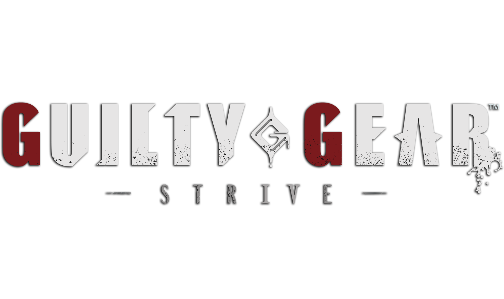
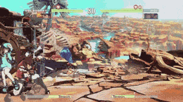
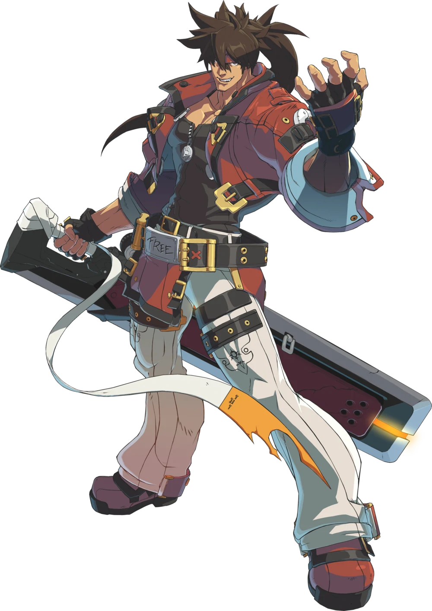
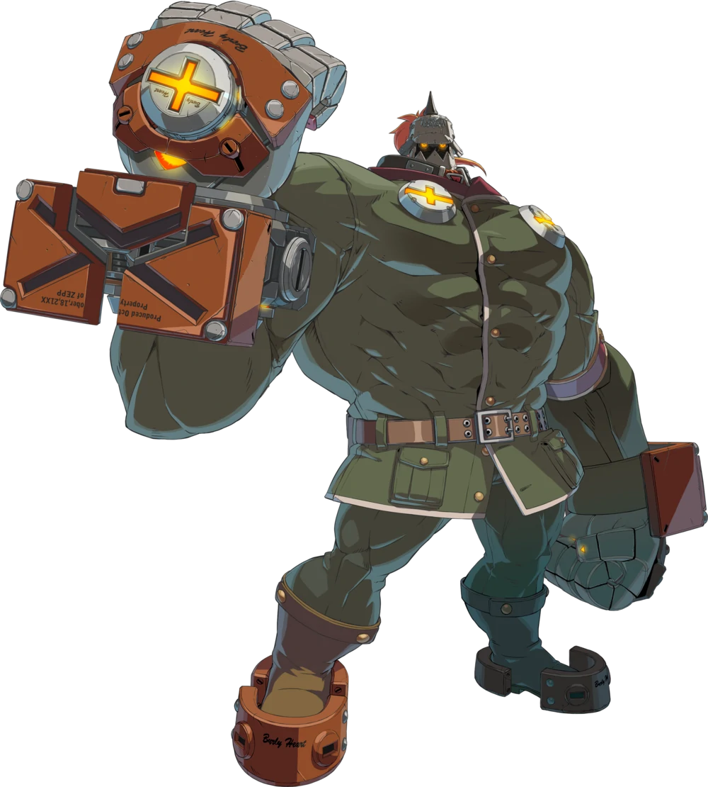
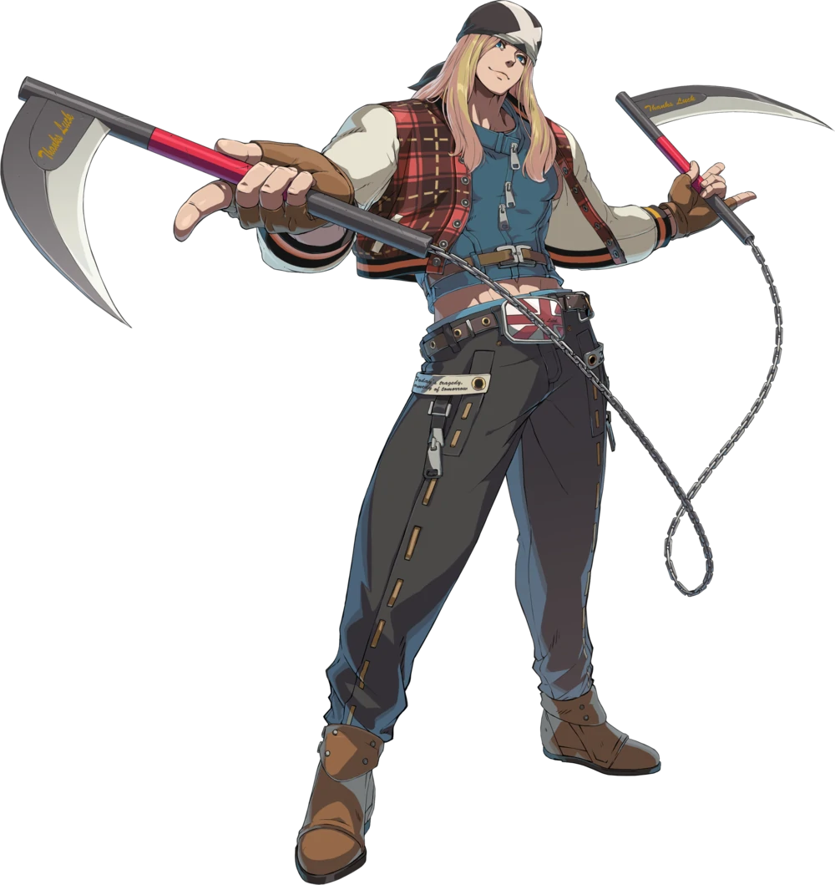

Guilty Gear is a traditional 2D fighter where you go 1 on 1 against your opponent, Guilty Gear provides the player with a variety of special moves for each character that are designed to be as unique as possible with a quality over quantity selection. The game has great mechanics not seen in fighting games like frame canceling from a single button or being able to get out of a combo if needed but very limitet do maybe once a round.


SOLBADGUY is a aggressive fighter in guilty gear strive as his moves are very fast and hard hitting dealing chunks of damage of one combo that could start easily, with moves to close in the gap between you and youre opponent and even a grab to mix them up. The one thing sol lacks is range but with the abilitie to be in your opponents face at nearly all times in battle makes him fast and mighty in a great players hand.


POTEMKIN is a slow but heavy hitting cyborg with his powerful grabs deleting chunks of the opponents health. Potemkin is slow but his long reaching arms keep away the opponent and his grabs forcing the opponent to be cautios or risking losing the battle because of one mistep.


AXLLOW is a zoner which means that he uses his long range chains to keep you as far away from him as possible with Axllow prompting the player to try to chip away health from the opponent at a far. Axllow also does not bost so much HP meaning that its risky for him to get up close to the opponent. If you master the zoner play style you will be able to keep away from the opponent safely.